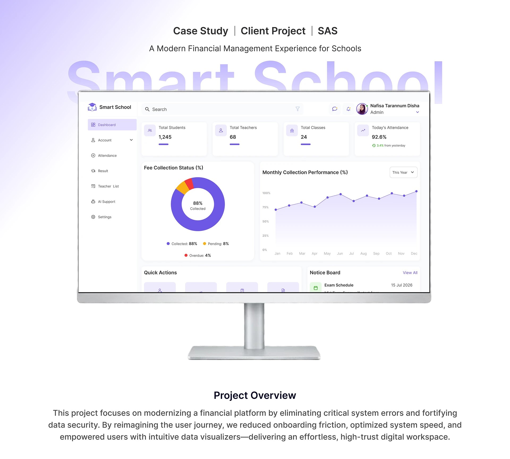
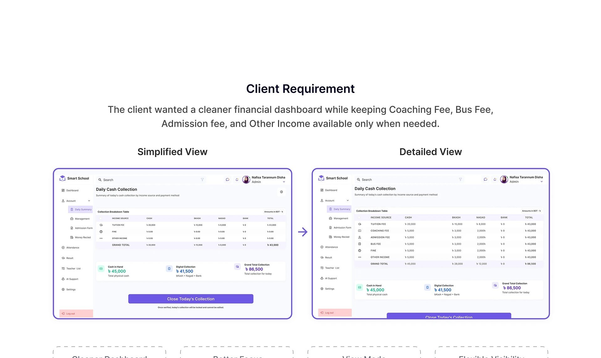
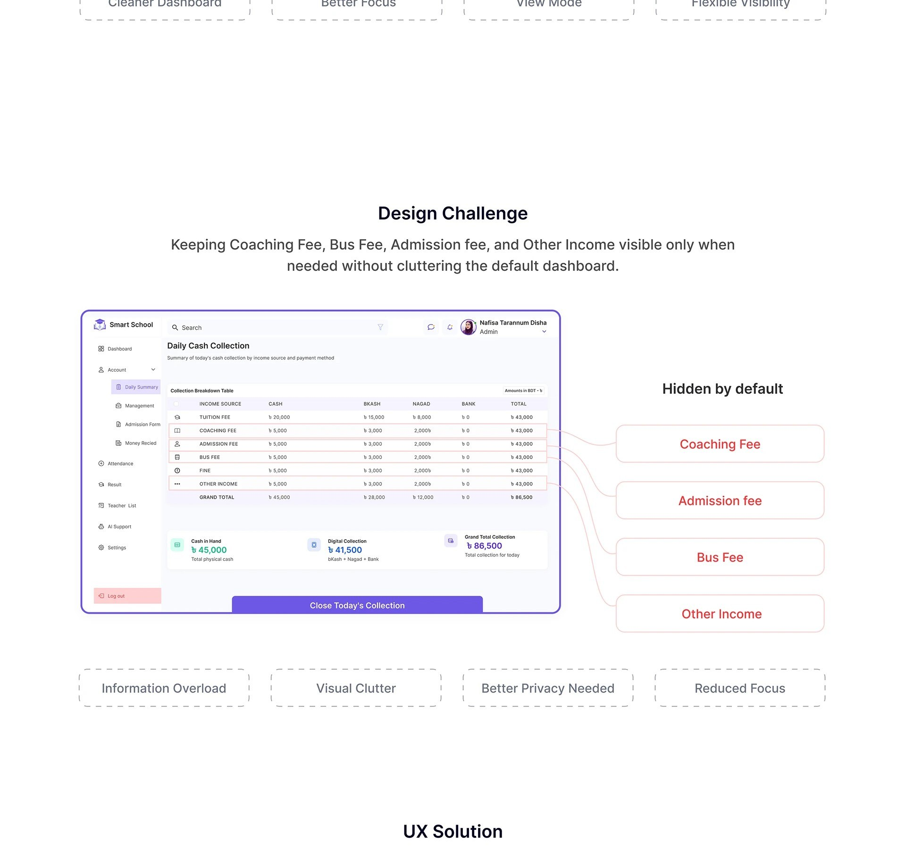
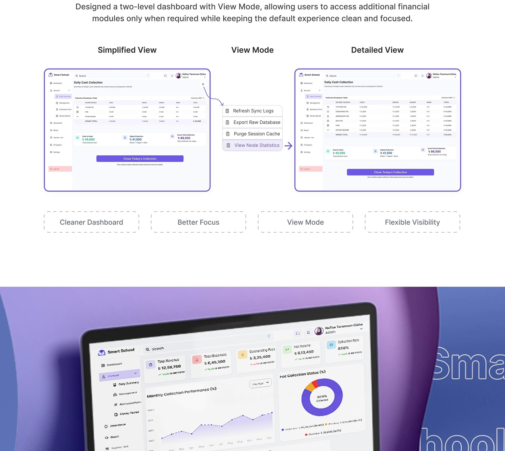
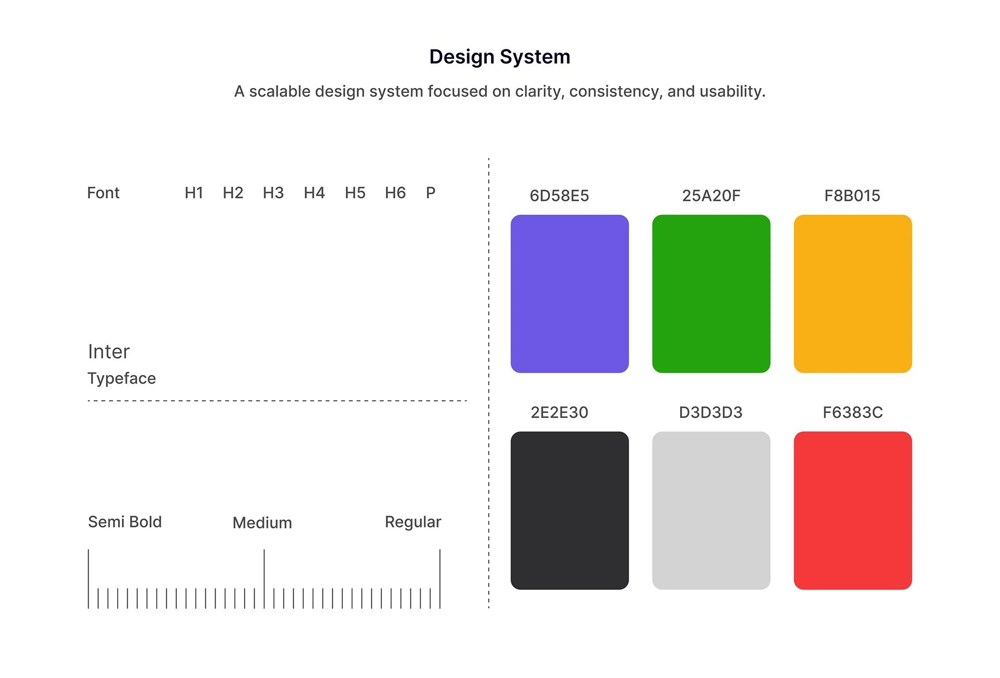
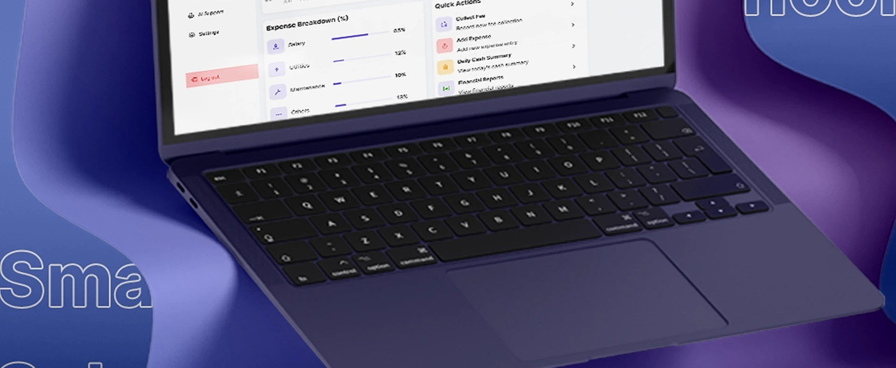

Smart School
A modern financial management experience for schools: modernizing a SaaS platform by eliminating critical system errors and fortifying data security, while reimagining the user journey to reduce onboarding friction, optimize system speed, and empower users with intuitive data visualizers.

Project overview
This project focused on modernizing a financial platform for schools by eliminating critical system errors and fortifying data security. By reimagining the user journey, the team reduced onboarding friction, optimized system speed, and empowered users with intuitive data visualizers, delivering an effortless, high-trust digital workspace. The project was built by a small team; I worked on UX research and UI design alongside the rest of the group.
Client requirement vs. design challenge
The client wanted a cleaner financial dashboard while keeping granular detail (Coaching Fee, Bus Fee, Admission Fee, and Other Income) available only when needed. That created a direct design tension: keeping those four categories visible by default caused information overload and visual clutter, but hiding them outright risked reduced focus and a privacy concern for admins who do need the detail sometimes.


The UX solution
The team designed a two-level dashboard with a "View Mode" toggle: a small contextual menu (Refresh Sync Logs, Export Raw Database, Purge Session Cache, View Node Statistics) that lets an admin step from the Simplified View into the Detailed View only when they actually need the extra financial modules, keeping the default experience clean and focused for everyone else.

Design system
A scalable design system focused on clarity, consistency and usability underpins the dashboard: Inter as the primary typeface across a full H1–H6/paragraph type scale, and a six-color palette (indigo, green, amber, near-black, light gray and red) used consistently for navigation, status indicators and alerts across every screen.

Outcome
A modernized financial dashboard that resolves a genuine, specific UX tension for a real client, detail versus clarity, rather than defaulting to either "show everything" or "hide everything." The View Mode pattern keeps the daily-use experience simple while preserving full financial visibility exactly when an admin needs it.

The real design decision here was resisting a binary choice. Instead of picking "simple" or "complete," the View Mode pattern let the dashboard be both, depending on what the person looking at it actually needed in that moment.